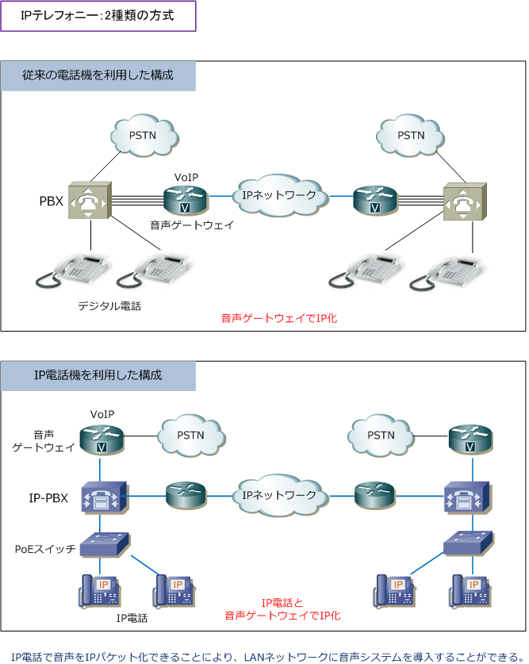
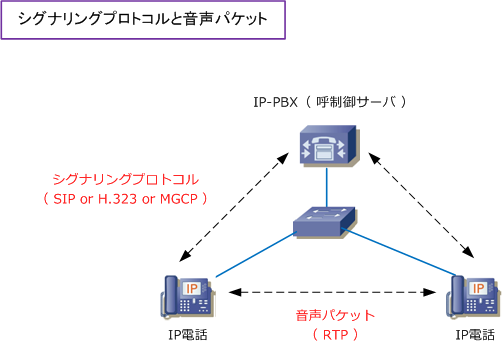
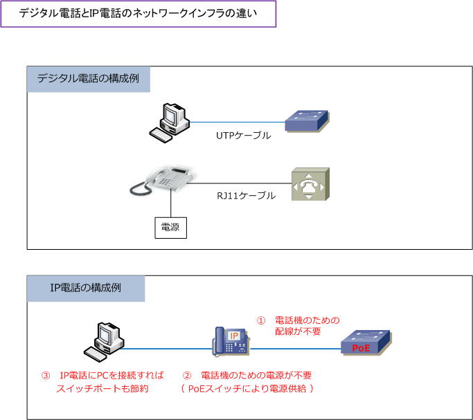

IP Telephony - IP Phone & VoIP
IPテレフォニー ： 2種類の方式
IPネットワークで行う電話通信のことをIPテレフォニーと言います。IPテレフォニーには2種類の方式が あり、従来の電話機を使用する方式、IP電話機を使用する方式です。それぞれの違いと仕組みは以下の通り。
| IPテレフォニー2種類の方式 | 使用する機器構成 |
|---|---|
| 従来の電話機を使用する方式 | 従来の電話機、従来のPBX、音声ゲートウェイで構成。音声ゲートウェイが音声をIP化する。 |
| IP電話を使用する方式 | IP電話、IP-PBX、音声ゲートウェイで構成。IP電話と音声ゲートウェイが音声をIP化する。 |
PBX (Private Branch eXchange) ： 企業で導入される構内電話交換機。内線電話同士の接続、公衆回線への電話接続を行います。

VoIPやIP電話を使用しない従来の電話システムでは、例えば、東京⇔大阪の社内の内線通話が発生すると 通話料金が発生していました。しかし、音声をIP化することで、拠点間の通話はIPパケットとして拠点間の WANで流れるので通話料金は発生しません。拠点間の内線通話の無料化は、音声のIP化の最大のメリット。 現在のIPテレフォニーの主流はIP電話を使用した構成。システム統合によるコスト削減のメリットが大きい。
IP電話の構成 - シグナリングプロトコルと音声パケット
音声通話は受話器を上げた後、ダイヤルして発信して、着信して相手が受話器を上げた後に開始されます。 音声通話前の一連のやりとりのことをシグナリング（呼制御）と言います。シグナリングプロトコルには、 SIP、H.323、MGCPなどがあり、IP電話とIP-PBX（呼制御サーバ）とでやり取りされます。シグナリング 制御の後、IP電話同士でRTPというプロトコルにより音声パケットがやりとりされて音声通話が実現します。

| シグナリング プロトコル |
H.323 | MGCP | SIP |
|---|---|---|---|
| 標準化団体 | ITU-T | IETF | IETF |
| 標準化時期 （最新版） |
1996年（2000年） | 1999年（2003年） | 1999年（2002年） |
| 目的 | 音声、画像のマルチメディア 通信を目的として策定 |
キャリアがIP網で電話サービスを 提供する際に使うことを目的として策定 |
Client⇔Server間で通信セッションを 開始するためのプロトコルとして策定 |
| データ形式 | バイナリ | テキスト | テキスト |
| 通信方式 | ピアツーピア | マスター、スレーブ | ピアーツーピア |
| メリット | 標準化が早く、実装製品が多い | 異メーカー機器でも相互接続性が高い | 製品への実装が容易。将来性が高い |
| デメリット | 呼制御手順が複雑、拡張性が低い | 拡張性が低い | 拡張使用の標準化が遅れている |
IP電話の構成の特徴
従来の電話機では、社内LANネットワークは別に、電話機には例えばRJ11のケーブルと電源が必要でした。 一方、IP電話機では社内LANネットワークがあれば、IP電話をLANケーブルに接続して電話通信を行うこと が可能であり、LANスイッチが「PoEスイッチ」であればUTPケーブルから電源供給することが可能であり、 IP電話機のための電源は必要ありません。IP電話機にはスイッチと接続するポートだけではなく、PCと接続 するポートも有しており、IP電話機にPCを接続すれば1つのスイッチポートにIP電話とPCが接続可能です。

上図の構成の場合、IP電話機とPoEスイッチ間を802.1Qトランク（タグVLAN）接続して、例えば PC用のVLANにVLAN10、IP電話機用のVLANにVLAN20として、VLANを分離させるのが一般的です。
PoE（Power over Ethernet）
PoEとは、カテゴリ5以上のUTPケーブル上で電力供給する技術です。電力供給が困難な場所に設置された 無線LANアクセスポイント、IP電話、Webカメラなどへの電源供給等でよく使用される技術。PoEの給電 仕様は以下の通りです。例えばクラス3のIP電話機に電源供給したい場合、1ポートで15.4Wの電力供給が 可能なPoEスイッチを選定する必要があります。PoEスイッチの選定前に受電デバイスの必要電力の確認を！
PoE給電仕様
| クラス | 給電機器（PSE）の電力 | 規格 | 通称 | |
|---|---|---|---|---|
| 0 | 15.4W | IEEE802.3af | デフォルト | PoE |
| 1 | 4.0W | IEEE802.3af | タイプ1 | PoE |
| 2 | 7.0W | IEEE802.3af | タイプ1 | PoE |
| 3 | 15.4W | IEEE802.3af | タイプ1 | PoE |
| 4 | 30.0W | IEEE802.3at | タイプ2 | PoE+ |
| 5 | 45.0W | IEEE802.3bt | タイプ3 | PoE++ |
| 6 | 60.0W | IEEE802.3bt | タイプ3 | PoE++ |
| 7 | 75.0W | IEEE802.3bt | タイプ4 | PoE++ |
| 8 | 90W-99W | IEEE802.3bt | タイプ4 | PoE++ |